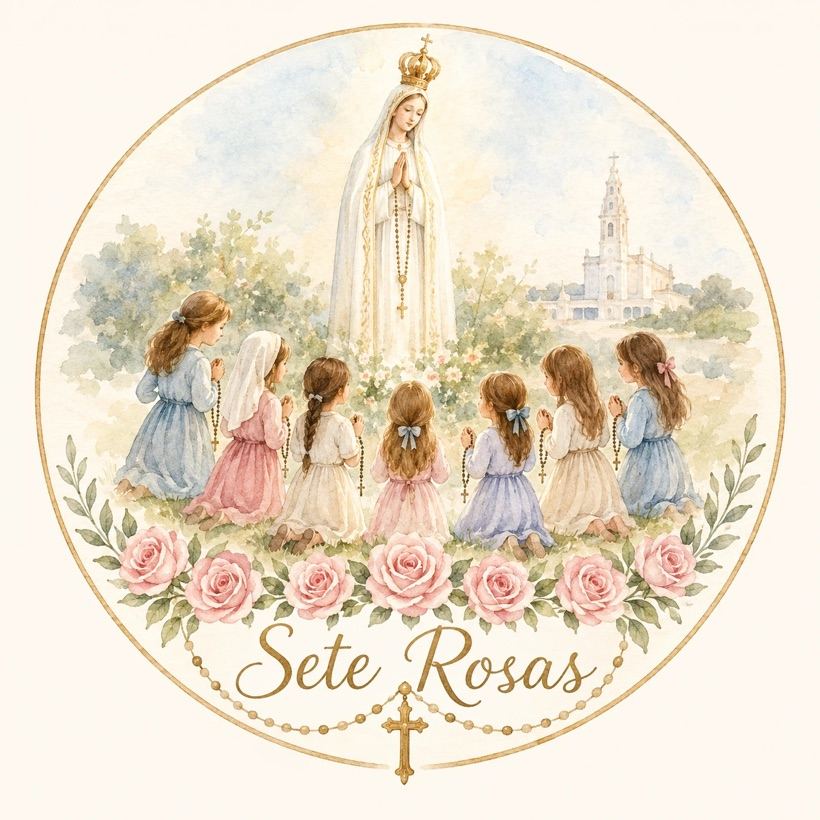

Ad Iesum per Mariam
"Rezem o terço todos os dias."
Nossa Senhora, em Fátima, 13 de maio de 1917
Sinal da CruzPelo sinal da Santa Cruz, livrai-nos, Deus, Nosso Senhor, dos nossos inimigos. Em nome do Pai, e do Filho, e do Espírito Santo. Ámen.
CredoCreio em Deus Pai todo-poderoso, Criador do Céu e da Terra; e em Jesus Cristo, seu único Filho, Nosso Senhor, que foi concebido pelo poder do Espírito Santo; nasceu da Virgem Maria; padeceu sob Pôncio Pilatos, foi crucificado, morto e sepultado; desceu aos infernos; ressuscitou ao terceiro dia; subiu aos Céus, está sentado à direita de Deus Pai todo-poderoso, donde há de vir a julgar os vivos e os mortos. Creio no Espírito Santo, na santa Igreja Católica, na comunhão dos Santos, na remissão dos pecados, na ressurreição da carne e na vida eterna. Ámen.
Pai-NossoPai Nosso, que estais no Céu, santificado seja o vosso nome, venha a nós o vosso reino, seja feita a vossa vontade, assim na terra como no Céu. O pão nosso de cada dia nos dai hoje, perdoai-nos as nossas ofensas, assim como nós perdoamos a quem nos tem ofendido, e não nos deixeis cair em tentação, mas livrai-nos do mal. Ámen.
Ave-MariaAve Maria, cheia de graça, o Senhor é convosco, bendita sois vós entre as mulheres e bendito é o fruto do vosso ventre, Jesus. Santa Maria, Mãe de Deus, rogai por nós, pecadores, agora e na hora da nossa morte. Ámen.
GlóriaGlória ao Pai, ao Filho e ao Espírito Santo. Como era no princípio, agora e sempre, e por todos os séculos dos séculos. Ámen.
Oração de FátimaÓ meu Jesus, perdoai-nos, livrai-nos do fogo do inferno, levai as almas todas para o Céu, principalmente as que mais precisarem.
Salve-RainhaSalve, Rainha, Mãe de misericórdia, vida, doçura e esperança nossa, salve! A vós bradamos, os degredados filhos de Eva. A vós suspiramos, gemendo e chorando neste vale de lágrimas. Eia, pois, advogada nossa, esses vossos olhos misericordiosos a nós volvei. E depois deste desterro mostrai-nos Jesus, bendito fruto do vosso ventre. Ó clemente, ó piedosa, ó doce sempre Virgem Maria. Rogai por nós, Santa Mãe de Deus, para que sejamos dignos das promessas de Cristo. Ámen.
Sete Rosas · 7rosas.pt
Um terço de cada vez, até à paz no mundo.